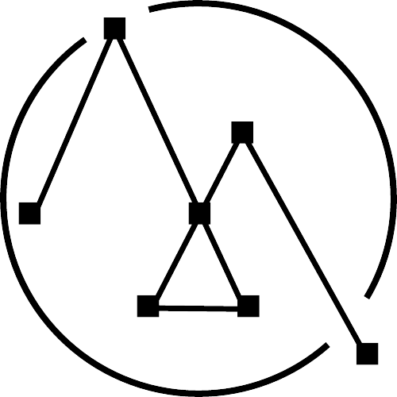

Aluno: Mário Cesar Cunha Fialho
Matrícula: 20222tsis0253
Informe abaixo as notas do aluno e o tipo de média para receber o resultado:
Primeiro número:
Segundo número:
Terceiro número:
Tipo de média (Aritmética, Ponderada ou Harmônica):
Calcular médias
Calcule a média escolhida